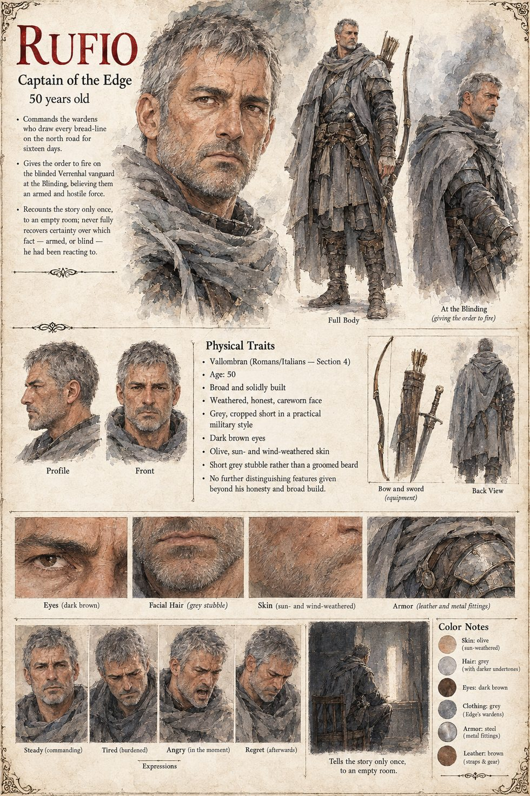

Rufio
Captain of the Edge · 50 years old
A broad, honest, careworn captain of the guard, commander of the wardens of the Edge — palace guardsmen and Granary men in borrowed grey — who opens the nine gates on the Roll of the Lit and, at the Saltway Gate, turns back with regret and in perfect good order the first of the people whose names cannot be found. He keeps the Order's orders: no armed body is to be admitted to the light on any pretext, and forty thousand people eat from the Gates.
At the low hour he sees four thousand armed men step across the line into noon, and gives the word. The wardens loose for eleven minutes at what they can see, which is a mass of stumbling figures with their hands held out; two thousand three hundred and four northerners die, and the Order's tally of its own losses is six. It is perfectly true, as he will say once, to the empty room that is the only audience he ever chooses, that the men were armed. They were also blind. He cannot remember, for the rest of his life, which of those two facts he was looking at when he gave the word.